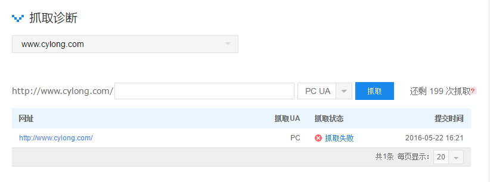
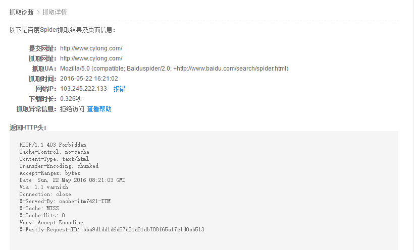
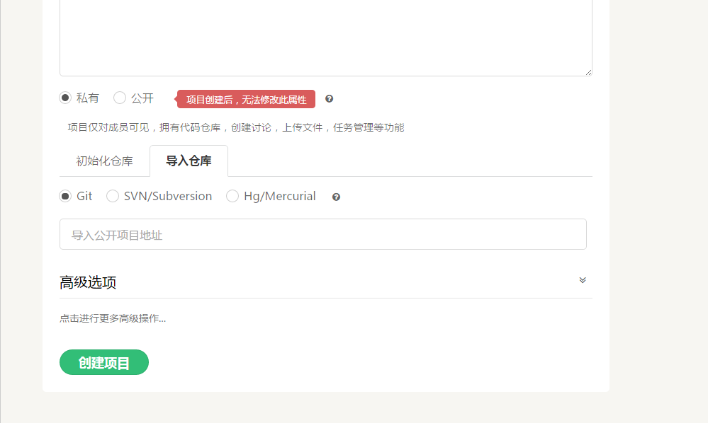
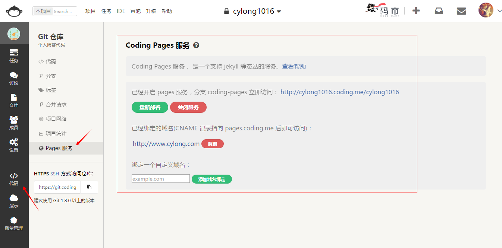
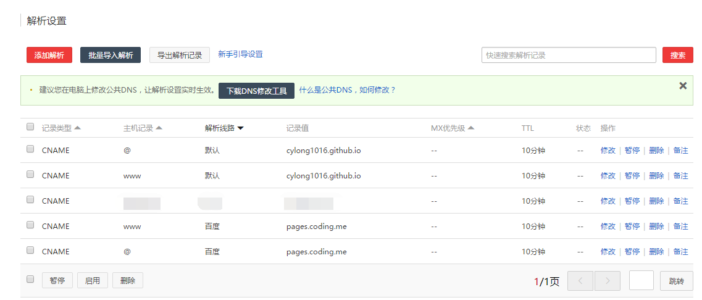
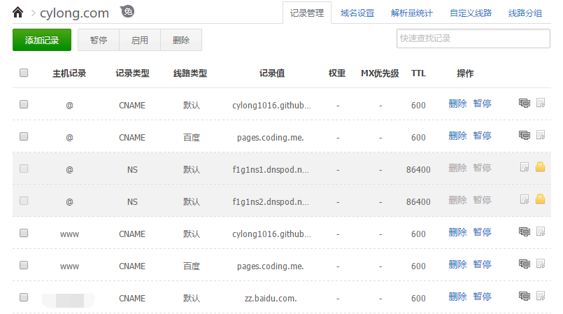

最近在研究网站在 Google 和百度的收录问题，Google 收录很轻松，抓取提交下链接就好了，但是百度却花了我好长时间才搞定，这也是为什么这篇博客写的这么晚 ( ╯□╰ )。有关如何能让你的网站被搜索到请参考：
原因
在 百度站长平台 上进行抓取诊断的时候，发现一直抓取失败，如图：


后来才发现，原来是 Github 禁止百度爬虫抓取，原因是百度的抓取太猛烈，给 Github 的用户造成了可用性问题，而且会一直禁用下去。。。 【我该吐槽 Github 呢？还是百度呢？大家心知肚明就好。（╯－＿－）╯╧╧】
解决
我想了想，既然 Github 不让百度抓取，那么我干脆把博客部署到其他地方吧。于是找到了国内的 CODING 【之前可能有很多小伙伴使用的是 Gitcafe，不过已经被 CODING 收购了，2016-05-31 号就会停止服务】。CODING 中也提供和 Github 相同的 Pages 服务。下面是具体步骤：
- 注册登录 CODING。
- 创建新项目，项目的后缀必须是和你的个性后缀一样。
- 创建项目的时候你可以选择从 Github 上导入你的博客仓库或者之后自己部署到 CODING 上，如下图：
 - 进入你的项目，点击左侧的
代码，再选择Pages 服务，选择部署分支，默认是coding-pages，建议换成master分支和 Github 保持一致。然后点击立即开启。 - 绑定自己的域名，如下图：
 - 到你的 DNS 服务商修改你的域名解析记录，这里不需要删除解析到 Github 的记录，像我下面这样配置就可以，这样正常访问还是访问到 Github 上，百度抓取的时候是抓取的 CODING 上的项目。
万网 DNS 设置：

DNSPod 设置：

注意：我的域名在万网购买的，默认使用的是万网的 DNS，设置成百度后开始是好用的，后来就又抓取不到了（╯－＿－）╯╧╧。 于是我就换成了 DNSPod 的服务，把线路类型设置成百度、搜索引擎或者国内都可以。如果设置成搜索引擎的话注意 Google 也会去 Coding.net 抓取页面。设置成国内的话，国内的其他用户访问也访问的是 Coding.net 中的页面，相比访问 Github Pages 会更快一点。
Hexo 同时部署到 Github 和 Coding
既然上面的 DNS 分流到了 Github 和 Coding 上，那么我们在部署的时候就要同时维护这两个仓库，好消息是 Hexo 框架支持同时部署到 Github 和 Coding 上，详细介绍请参考：
感谢
解决 Github Pages 禁止百度爬虫的方法与可行性分析 - 咀嚼之味
解决百度爬虫无法抓取github pages - Lippi-浮生志
文章标题：解决 Github Pages 禁止百度爬虫抓取的问题
文章作者：cylong
文章链接：http://www.cylong.com/blog/2016/05/22/github-baidu-spider-exception/
有问题或者建议欢迎在下方评论。欢迎转载、引用，但希望标明出处，感激不尽(●’◡’●)